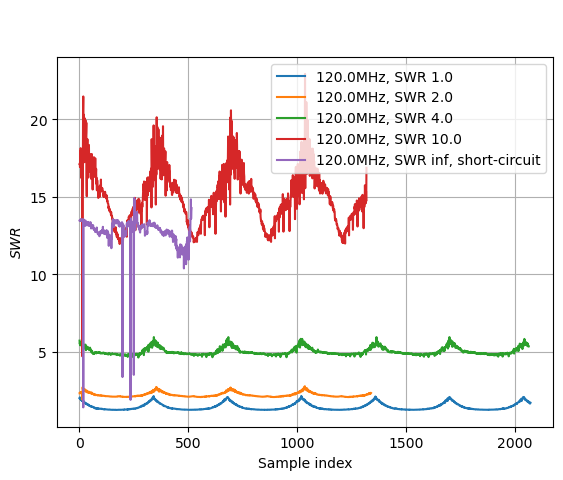
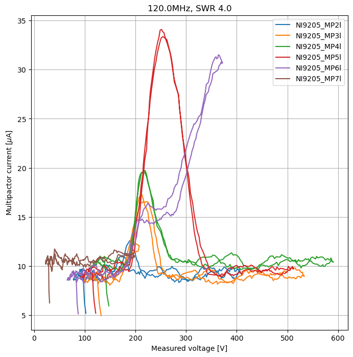
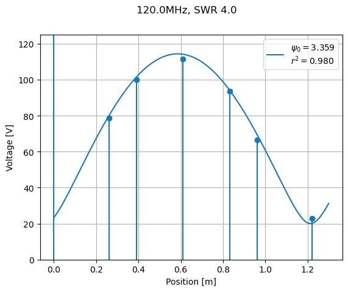
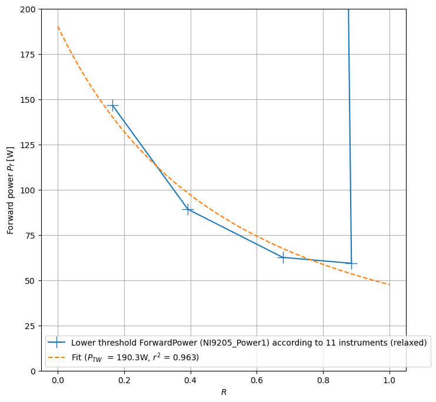
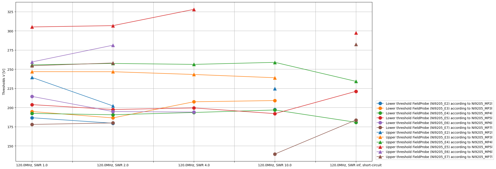
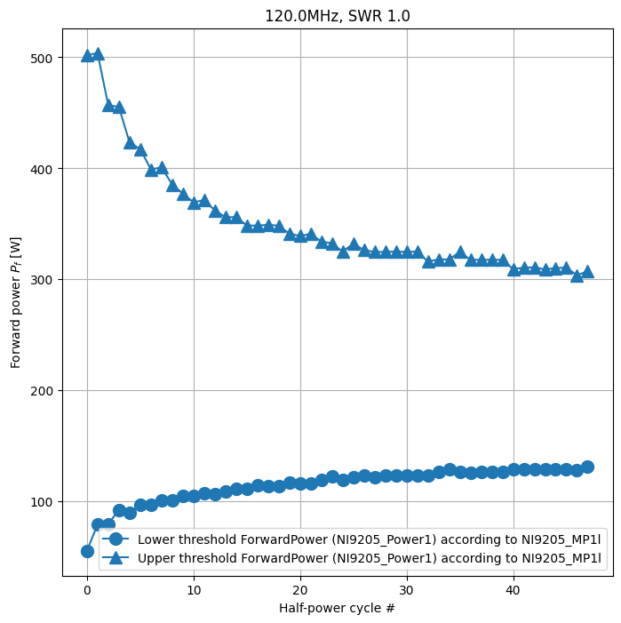
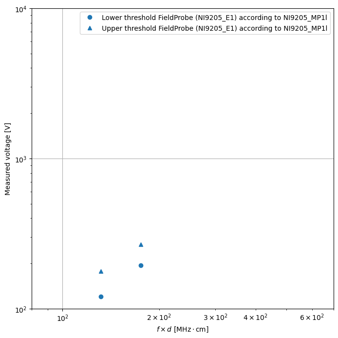

Gallery
Here you will find some examples of plots that can be produced, as well as the Jupyter Notebooks to produce it. For more details, check out the Tutorials section.

Plot signal measured by instruments

Plot data from several tests on same fig

Plot an instrument signal vs another

Animate the test

Reconstruct electric field at every position

Plot power thresholds (global detection)

Plot voltage thresholds (local)

Plot evolution of thresholds

Make a susceptiblity chart